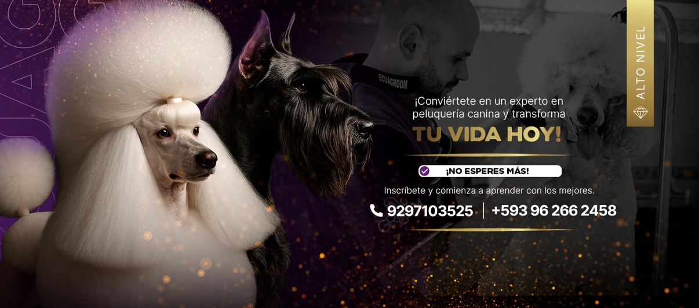
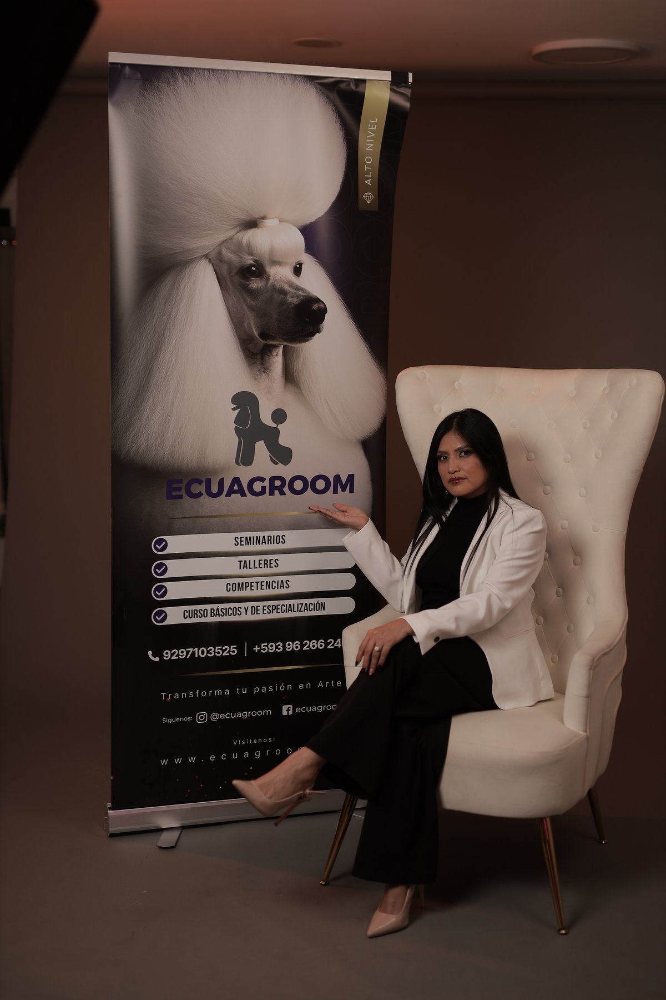
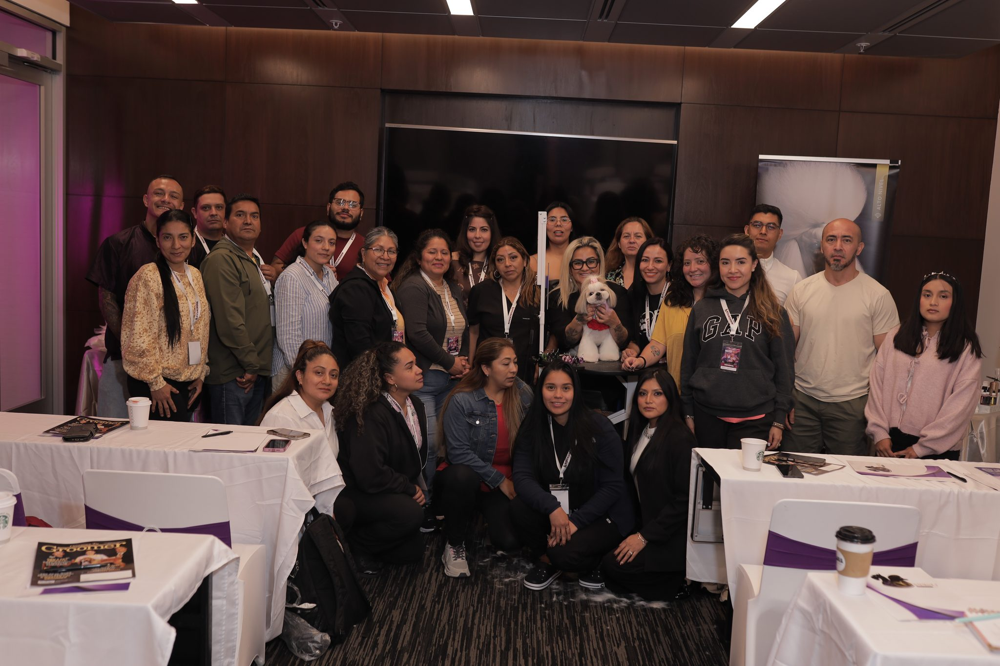
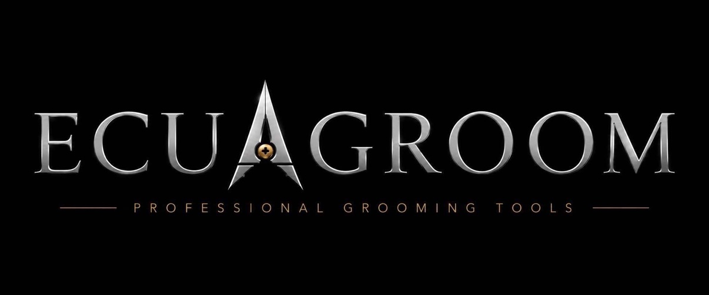

Educación técnica
Contenido avanzado y aplicable en la mesa de trabajo: técnica de tijera, acabados, manejo de mantos y estándares de salón, enseñados paso a paso por instructoras en activo.
Ecuagroom es la marca de formación continua y comunidad profesional creada por la educadora Blanca Lamar: talleres presenciales, seminarios y certificaciones de participación para peluqueros caninos que quieren seguir creciendo.

Ecuagroom nació en Ecuador y hoy crece desde Estados Unidos con una idea clara: el groomer profesional nunca deja de aprender, y aprende mejor acompañado. Todo lo que hacemos gira alrededor de tres pilares.
Contenido avanzado y aplicable en la mesa de trabajo: técnica de tijera, acabados, manejo de mantos y estándares de salón, enseñados paso a paso por instructoras en activo.
Una familia profesional que se apoya, comparte clientes, oportunidades y conocimiento. En Ecuagroom nadie crece solo: cada evento deja colegas, no solo apuntes.
Talleres íntimos y seminarios donde se practica de verdad, con corrección en vivo y certificado de participación. La experiencia presencial es el corazón de la marca.
Lo esencial de la marca, página por página: la gira que viene, los eventos que ya hicimos y las herramientas con nuestro nombre.
Cuatro paradas con Blanca Lamar y Gisela Gonzalez: Bridgeport, Nueva York, Florida y Los Ángeles. Las fechas se anuncian primero a la lista de espera.
Ver la gira y la lista de espera →Del primer congreso en Santo Domingo (2018) a la Masterclass de Nueva York (2026): recorre los álbumes de fotos de cada encuentro de la comunidad.
Ver los eventos →Las tijeras profesionales de la marca, probadas en el salón por Blanca, y su manual de peluquería canina, ya en producción.
Ver los productos →La gira 2027 no parte de cero: Ecuagroom lleva años reuniendo a la comunidad groomer. En Ecuador, su Congreso Internacional de Peluquería Canina va ya por la cuarta edición, con sedes en Santo Domingo, Quito y Guayaquil; y en Estados Unidos la marca ya realizó seminarios, talleres de nivelación y su Masterclass en Nueva York. Toca la portada de cada evento para abrir su álbum de fotos.
El evento que lo empezó todo: del 1 al 3 de julio de 2018, en Santo Domingo, Ecuador. Cuatro ponentes internacionales — Felipe Corrêa Galharde (Brasil), Claudio Morales (Chile), César Salamanca (Colombia) y Luis Aparicio (Panamá) — en el primer congreso y competencia internacional de la marca.
Especialidades de los ponentes
Podio de la I Competencia — 25 competidores
1.º Mónica Bertero (†) — Cocker Spaniel · 2.º Santiago Chuquin — Schnauzer · 3.º Fernando Hidalgo — Bouvier des Flandres.
Auspiciantes
Artero · Casa Grooming · Passion Grooming.
Del 30 de junio al 2 de julio de 2019, en la Cámara de Comercio de Santo Domingo: tres días de seminarios y taller práctico con expositores de siete países — entre ellos Michael Zhang (China), Sandra Montoya (México), Roberto Nugnes (Argentina) y Emilia Díaz (España) — y la primera competencia oficial de peluquería canina realizada en Ecuador.
En esta edición se incorporaron como ponentes los ecuatorianos Mónica Bertero y Santiago Chuquin, proyectando el talento nacional, y se realizó por primera vez la Noche de Integración de Groomers Ecuatorianos.
Podio — Categoría Profesionales
1.º Roberto Viera · 2.º Sandra Montoya · 3.º Fernando Hidalgo.
Auspiciantes
Hotel del Pacífico · Passion Grooming · Betoven · Artero Ecuador · Qualipure · Utsumi.
Del 27 al 29 de noviembre de 2022, en el Colegio de Médicos Veterinarios de Pichincha, sector Parque La Carolina. Ponentes internacionales como Claudio Morales (Chile), Yeiner Mayo y Diego RJ (Colombia), junto a talento ecuatoriano como Fernando Hidalgo; competencias por categorías — tijera, caniche, spaniel, stripping y creativo — y certificado de asistencia para los participantes.
La convocatoria reunió a 80 participantes de Ecuador, Colombia, Perú y Venezuela, y la Noche de Integración cerró el encuentro con un recorrido en chiva por Quito.
Especialidades de los ponentes
Jornadas complementarias
Premios Grooming Ecuador — primera edición
Trayectoria: Fernando Hidalgo · Groomer nacional: Betzaida Aspiazu · Groomer internacional: Fabio Gómez · Groomer revelación: Marcela Pacaya · Groomer influencer: William Mañay.
Resultados oficiales de la competencia
Best in Show: Álvaro Reyes (Colombia) — Cocker Spaniel.
Categoría Principiantes. Workshop principiantes: 1. Andrea Ruiz · 2. Michael Lamar · 3. Bryan Tamayo.
Categoría Intermedios. Workshop intermedios: 1. Norma Barrera · 2. Marcela Pacaya · 3. Ana Caiza. Peinado (Penteado): 1. Cayler Castillo · 2. Patricia Chávez. Stripping intermedio: 1. Diego García · 2. Sneider Ruiz · 3. Jonatan Seliitto. Asiático intermedio: 1. Yessica Arteaga · 2. Jonnatan Pazpur. Caniche intermedio: 1. Anderson Rodríguez · 2. Raquel Molina · 3. Guillermo Morey. Creativo intermedio: 1. Aura Hernández · 2. Rosa Simbaña.
Categoría Abierta. Creativo abierto: 1. Raúl Achote.
Categoría Profesional. Creativo profesional: 1. Dennis Moreno. Caniche profesional: 1. Rudy Ventura · 2. Yudy Machado · 3. Álvaro Reyes. Tijeras profesional: 1. Roberto Viera · 2. Yessica Arteaga. Workshop profesional: 1. Víctor Caló · 2. Dany Vergara. Spaniel profesional: 1. Álvaro Reyes · 2. Rudy Ventura · 3. José Viscue. Stripping profesional: 1. Luis Castro · 2. Roberto Viera · 3. Santiago Chuquin.
Del 6 al 8 de agosto de 2023, en la Finca «La Gloria», ubicada en el Km 52 de la vía a la costa, en Guayaquil: un ambiente campestre y relajado fusionado con el aprendizaje de nuevas técnicas de peluquería canina. Entre los ponentes invitados: Gisela González (Chile), Diego RJ (Colombia) y la educadora ecuatoriana Gabriela Salas. La experiencia incluyó la competencia, las premiaciones y la icónica noche de integración: una fiesta de espuma en las instalaciones de la finca. Además de los lugares por categoría, la competencia entregó premios especiales: Best in Show, Mejor Groomer de la Competencia y Mejor Groomer Revelación.
Temario del congreso
El juzgamiento estuvo a cargo de George Goginashvili (Ucrania) y Gisela González (Chile). Goginashvili participó además como ponente, con una clase de posicionamiento correcto de la tijera y un arreglo de raza en caniche gigante. La convocatoria reunió a groomers de cinco naciones: Ecuador, México, Colombia, Perú y Venezuela.
Especialidades de los ponentes
Esta edición incluyó el lanzamiento oficial de la marca Hyponic y la participación de Passion Grooming y la Escuela de Peluquería Canina Gabriela Salas.
Best in Show 2023
1.º Roberto Viera (Ecuador) — Cocker Spaniel · 2.º Alejandro Moreno (Colombia) — Schnauzer · 3.º Cristhiam Chavarro (Colombia) — Bedlington Terrier.
El 10 y 11 de noviembre de 2024, dos días dedicados al estilo asiático con la educadora ecuatoriana Gabriela Salas: anatomía y estructuración corporal, morfología, cosmética y preparación del manto, caritas y expresiones, y variaciones de estilo con toques de color.
El 1 de junio de 2025, la educadora ecuatoriana Gabriela Salas presentó en Brooklyn este seminario de peluquería comercial, de plazas limitadas. Su enfoque: técnicas de peluquería comercial para optimizar tiempo y rentabilidad, estrategias de cortes rápidos y eficientes, y técnicas de tijera y máquina. El seminario forma parte de la misma gira de junio de 2025 que continuó con los talleres personalizados del 2 al 7 de junio.
En junio de 2025, la educadora ecuatoriana Gabriela Salas volvió a Brooklyn con una serie de talleres personalizados, en grupos de 4 personas por fecha. Se ofrecieron tres pares de fechas: 2 y 3, 4 y 5, y 6 y 7 de junio. Las fechas del 2 y 3 de junio se agotaron por completo (sold out). En los talleres, las participantes practicaron también con perros de felting (modelos de práctica) además de trabajar con perros reales.
El 12 y 13 de mayo de 2026, la educadora ecuatoriana Gabriela Salas llevó a Bridgeport, Connecticut, su seminario & taller de peluquería comercial, de cupos limitados.
Curso intensivo de 2 días, el 14 y 15 de septiembre de 2026, en el salón de Blanca Lamar (25 Washington Terrace, Bridgeport, CT): perfeccionamiento de técnicas, prácticas con perros reales y corrección y mejora de acabados.
El 20 de septiembre de 2026, la Masterclass Professional Dog Grooming reunió a groomers de la zona en el Courtyard by Marriott Long Island City (29-15 Queens Plaza North, Long Island City, NY 11101), en una jornada de formación avanzada con Gisela González y el groomer Harry como ponente invitado.
Así se vivió la jornada del 20 de septiembre en el Courtyard by Marriott Long Island City.
Segunda edición del workshop: curso intensivo de 2 días, el 22 y 23 de septiembre de 2026, en el salón de Blanca Lamar (25 Washington Terrace, Bridgeport, CT): perfeccionamiento de técnicas, prácticas con perros reales y corrección y mejora de acabados.
Jornada práctica el 28 de septiembre de 2026: corrección de técnicas, acabados y manejo de herramientas para groomers que ya ejercen y quieren llevar su trabajo a un nivel más profesional. El taller se realizó en un estudio en Queens, Nueva York.
Cuatro paradas, un mismo formato probado. Las instructoras de toda la gira son Blanca Lamar y Gisela Gonzalez. Las fechas exactas se anuncian primero a la lista de espera.
La casa de Ecuagroom abre la gira: taller íntimo y premium en la ciudad sede de Lamar Grooming Studio y su academia.
El evento grande de la gira: un seminario abierto a toda la comunidad groomer del área tri-estatal. Programa y cupo por anunciar.
Taller íntimo y premium en Florida. La ciudad sede se define con la demanda de la lista de espera: tu registro ayuda a decidirla.
El cierre de la gira en la costa oeste, con el formato ya pulido en las paradas anteriores.
Dos días de práctica intensiva con grupos reducidos, para corregir técnica en vivo y trabajar sobre perros reales. Cada participante recibe su certificado de participación y acceso a la mesa de productos Ecuagroom en el evento.
Los cupos de taller son solo 12 por ciudad. Quienes estén en la lista reciben las fechas y la apertura de inscripciones antes que nadie.

Groomer y educadora ecuatoriana radicada en Connecticut. Fundadora de Lamar Grooming Studio y Lamar Grooming Academy en Bridgeport, CT.
Con Ecuagroom, Blanca lleva su experiencia de salón y de aula a los groomers que quieren seguir creciendo: formación continua, eventos con estándar profesional y una comunidad que crece ciudad a ciudad — con la mira puesta en llevar el modelo Ecuagroom a nuevas sedes en el futuro.
Su trayectoria: groomer profesional desde 2012 e Ingeniera Agropecuaria; en 2017 obtuvo el primer lugar en la competencia Equinoccio Groom, en Quito. Fundó Ecuagroom en 2018 y en 2024 se trasladó a Estados Unidos. En 2025 abrió Lamar Grooming Studio en Connecticut, obtuvo la certificación del New York City Department of Health and Mental Hygiene y fundó la Fundación Estamos Contigo, cuyo primer seminario gratuito para mujeres migrantes se realizó en agosto de 2025.
Formación internacional
Ecuagroom es para groomers que buscan perfeccionarse. Para quienes empiezan desde cero, la puerta de entrada es Lamar Grooming Academy en Bridgeport, CT: el curso profesional de peluquería canina de Blanca Lamar, con ingreso flexible de lunes a sábado.


Tijeras Ecuagroom. Nuestra línea de tijeras profesionales para groomers, seleccionada y probada en el salón por Blanca. Están a la venta en cada parada de la gira y por pedido directo.
El manual de Blanca Lamar. El libro de peluquería canina que reúne su método de trabajo, capítulo a capítulo. Está en producción y se anunciará primero a nuestra comunidad.
Pedidos y disponibilidad: contact@ecuagroom.com
Tres direcciones, un solo equipo. Escríbenos a la que corresponda y te respondemos directamente.
Blanca Lamar, fundadora. Alianzas, invitaciones y propuestas estratégicas.
blamar@ecuagroom.comGira 2027, talleres, seminarios y lista de espera.
info@ecuagroom.comPedidos de tijeras, productos y contacto comercial en inglés o español.
contact@ecuagroom.com